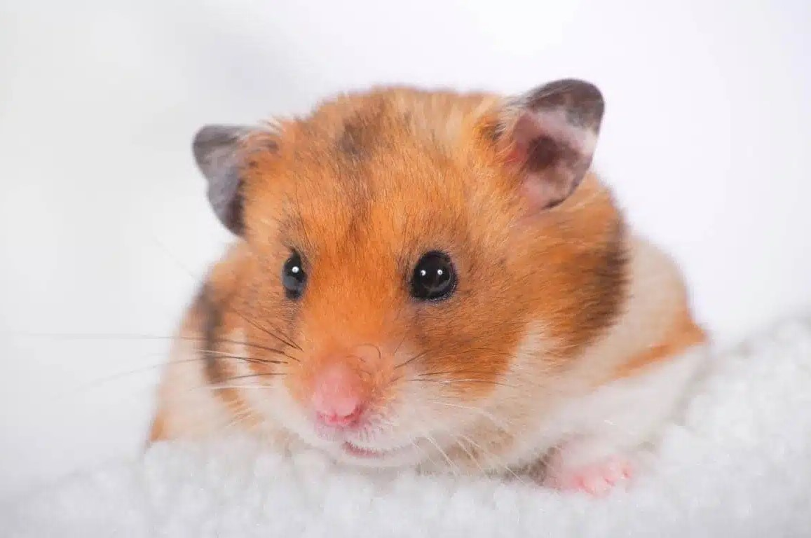
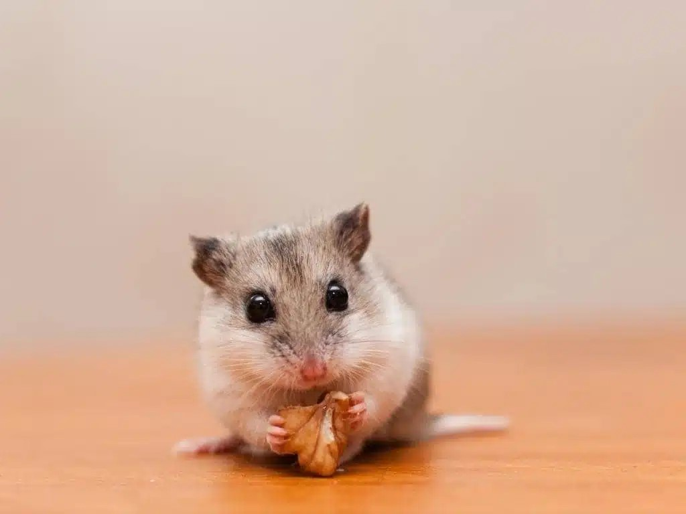
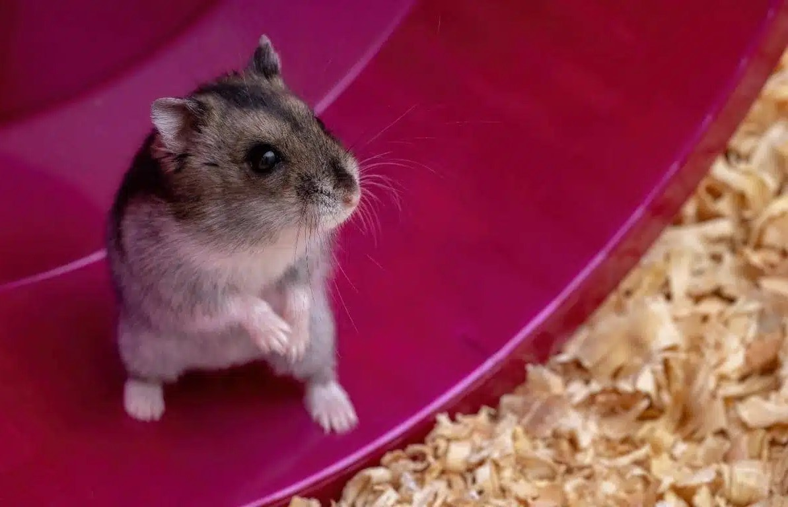
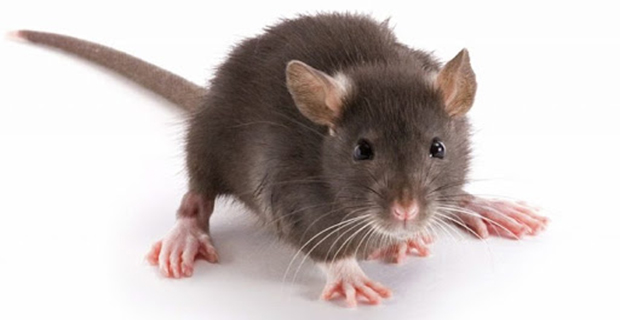

Top 5 most beautiful hamsters
What is a Hamster?
Hamsters are small, nocturnal rodents native to Europe, Asia and North Africa. There are about 19 species of Hamster in the world, the most popular being the Syrian Hamster. These cute mice have a short tail and a body covered with fur so they are also called bobtail mice.
-

Syrian Hamster -

Chinese Hamster -

Hamster Campbell’s -
Hamster Winter White (Russian Dwarf Hamster) -

long-tailed hamster